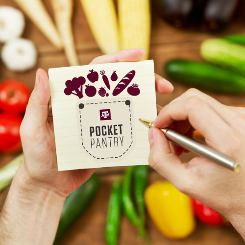

 >
The purpose of the Pocket Pantry program is to provide temporary relief to Texas A&M students in need who are experiencing food insecurity by providing immediate access to non-perishable food and toiletries before directing them to additional support resources on campus.
Pocket Pantries are located across campus. The Pocket Pantries, along with the 12th Can, opened their doors in November 2013. Currently, there are 29 Pocket Pantry locations around campus. A $50,000 annual allocation to this program will ensure the pantries remain stocked year-round.
A majority of pantries are marked with like this: